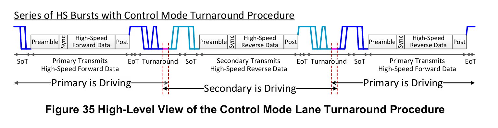
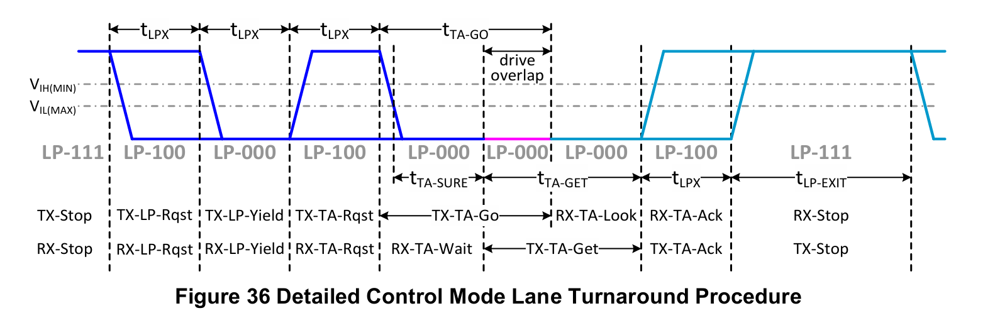
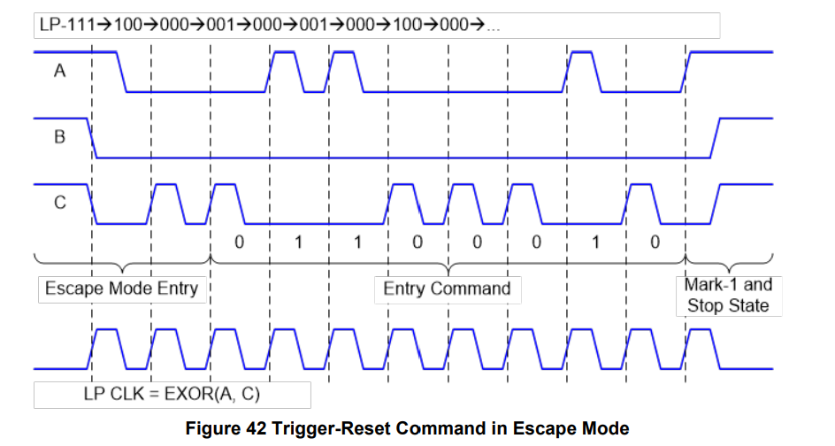

MIPI-CPHY-2
本文最后更新于：2024年5月4日 下午
- 参考
1. 传输数据结构
- 数据格式
- HS模式下，最小数据单元是16bit。
- LP模式下，最小数据单元是8bit。
- 在HS模式下，将16bit数据映射为一组7个symbol，分别是s0,s1,s2…s6。
- 其中s6被设置为最高位，s0被设置为最低位。
- 先传输s0，之后是s1…s6。
1.1 Encoding, Decoding
参考这篇博客中的第1节中Figure3流程图，下面将着重介绍其中部分模块。
Encoder相关的发射电路如下图所示。
- 其中Transmit Symbol Encoding Logic 模块产生需要发送的Wire State。
- 之后通过Transmit Pre-Drivers模块将3bit的Wire State发送出去。

Decoder相关的接收电路如下图所示。
- 主要包含两部分功能模块：Decoder以及时钟恢复电路。
- Decoder根据查找表、当前UI接收的Wire State以及前一UI接收的Wire State判断Symbol值。

2. Lane States and Line Levels
HS Mode & LP Mode
HS-TX始终以差分方式驱动Lane，而LP-TX是独立的驱动Lane中的一根线，并且以单端方式进行。

HS和LP模式下Lane的状态码如下表所示。

Alternate Low-Power(ALP) Mode
ALP Mode除了HS Mode的六种状态外还定义了两种状态：ALP-Pause State和ALP-Pause Wake State。
ALP模式下也是差分信号传输。
在ALP-Pause模式下，将Lane的三条线设置为相同电压值。
- ALP-Pause可以进一步分为ALP-Pause Stop和ALP-Pause ULPS状态，具体由电平设置决定。
Reciever端辨别ALP-Pause State和ALP-Wake State的转化是通过电平转变实现的。

3. 操作模式
3.1 HS & LP 操作模式
- 主要涉及到的几种操作模式包括
- HS Data or Calibration Burst
- Turnaround Procedure
- Escape Command
- 操作状态序列具体可见协议P41.
3.2 高速数据传输
高速数据以突发形式传输，为了帮助接收端同步，在发射端可以对发送的数据的开始和结束进行扩展(Premable、Post Sequence)。
C-PHY中存在与D-PHY相同的SOT和EOT序列，应在突发传输数据的前端和后端。
下图为高速数据传输波形图。
LP111-LP001-LP000，标识高速数据传输即将开始。之后关闭低功耗驱动器，打开高速传输驱动器。
之后经过t3-PREPARE时间后，开始发送前导码。
前导码主要包含三部分：t3-PREBEGIN，t3-PROGSEQ，t3-PREEND.
t3-PREBEGIN前几个Wire State可能接收端无法接收，t3-SETTLE之后，接收器启用，可以接收发送端发送的数据，并对其进行解码。
- t3-PREBEGIN是由多组 7个3 组合的，具体数目可由设计者指定。
t3-PROGSEQ设计者可选择是否包含，但应注意该部分不可以包含Sync Word, Post sequence, and ALP Codes。下图两张图分别是包含和不包含的情况。
t3-PREEND包含了一组7个3的组合。
前导码的长度主要取决于接收端电路实现。
前导码之后是Sync Word，其标识了数据包的开始，并可用作数据包的定时对齐。其组合包含4，4，4，4.
Post
- 当接收器检测到七个连续的’4’，标识Packet Data数据传输完成。可以有多组，取决于接收端电路设计。
- Post状态长度可调，与t3-PREBEGIN类似。
在t3-POST结束时，高速传输驱动器关闭，低功耗驱动器打开，并进入状态LP-111。

3.3 ALP 操作模式
ALP传输情况如下图所示。

（1）高速数据传输以ALP-Pause Stop或ALP-Pause ULPS开始，该阶段，Lane的三根线都被驱动到相同的电平。
（2）Transmitter发送”+x“ state 来唤醒Reciever，该阶段被称为ALP-Pause-Wake。
（3）Transmitter开始发送前导码。
- 前导码是用于同步接收端和发送端的符号序列，可保证正确的数据传输。
- 前导码由全3序列/全1序列组成，具体由突发传输类型决定。
（4）前导码发送之后发送包数据，主要根据传输类型进行划分，如下图所示，共介绍了5种不同情况。
（5）在任何突发传输完成之后，Transmitter会发送Stop Code/ULPS Code，后续需要发送Post2序列，来通知Reciever需要立即进入ALP-Pause Stop/ULPS状态。
- 在PHY层，从ALP-Pause ULPS 状态唤醒时间比从 ALP-Pause Stop 状态唤醒时间要更长，这样具有更低的功耗。

ALP传输种的Code
Trigger Code
- 与DPHY相同，Trigger被包含在Escape模式下，在Trans端，LLP通过PPI发送 Trig Code 给 PHY层；在Recie端，PHY层接收，并通过PPI传输给LLP层，作为一个标志，进行操作。
- 在ALP模式下，Trigger Code包含Trig 1 Code、Trig 2 Code、Reset Trig、Trig 3 Code、Trig 4 Code 和 Trig 5 Code。
Spacer Code（间隔码）
- 间隔码可以在前导码之后，Stop/ULPS Code之前的任何时间传输。
- 间隔码期间并不执行任何操作。
- 插入间隔码目的是为了在其它码之间插入间隔，或暂时暂停Lane中的传输。
LPDT Start/Nibble Code
- 低功耗模式 - Escape Mode - Mode - LPDT（低功耗传输模式）
- LPDT传输格式如 Fig.33 所示，前导码之后是LPDT Start Code，标识着LPDT传输的开始。
- 两个LPDT Nibble以1Byte为传输单位，第1个LPDT Nibble是字节LSB 4bit数据编码得到的，第二个LPDT Nibble是字节MSB 4bit数据编码得到的。
- LP Data 被编码为LPDT Nibble序列：S104444S0，其中S0是LSB Symbol，S1是MSB Symbol。对应表格可以在Spec P56查找。
- LPDT Nibble 序列是7bit的5进制数据。
Post1/2 Code
- 在高速数据传输模式下，协议要求TX端在发送高速数据之后，发送Stop/ULPS Code之前，需要发送Post1序列。
- Post1序列的作用在于保证高速数据传输状态与Stop/ULPS状态之间存在一个间隔，确保接收端可以准确的识别高速数据突发传输的结束。
- 在发送Stop/ULPS Code之后发送Post2序列。
- Post2序列的作用在于为RX提供足够的时间来确保可以切换到ALP-Pause Stop/ULPS状态。
- TX端发送的Post2序列长度取决于RX端的电路设计。
- 在高速数据传输模式下，协议要求TX端在发送高速数据之后，发送Stop/ULPS Code之前，需要发送Post1序列。
4. Bi-Directional Lane Turnaround
- 对于双向Lane，它的传输方向可以通过Lane Turnaround操作进行改变。
- 注意，传输方向可以被改变，但是Primary和Secondary不应该改变。
- Turnaround可以在两种模式下进行：
- 在低功耗模式下，Control Mode下进行。
- Fast Lane Turnaround.
4.1 Control Mode Lane Turnaround
控制模式下，Lane Turnaround 过程如下。
Fig.36
Primary和Secondary两侧的低功耗时钟周期tLPX可能不同，因此协议约束了两侧时钟周期的ratio范围。
如果Lane还没有进入TX-LP-Yield状态，可以通过驱动Stop状态来终止Turnaround，Lane将返回Stop状态。
如果Lane已进入TX-LP-Yield状态，不可以终止Turnaround。
 
4.2 Fast Lane Turnaround
不需要返回低功耗模式，减小了双向通信延迟。
传输过程如下图所示。
在高速传输模式下，转向代码(TAC)在Post1 Code 和 Post2 Code之间发送，以此通知RX端将要进行Turnaround。
在Post2传输完成之后存在一个转向间隙(TGAP)，完成Primary和Secondary之间传输的转向，并禁用两侧的驱动输出，防止出现争用情况。
TGAP之后，反向数据传输开始。

下图为Control Mode与Fast Lane Mode下传输的比较，可以明显看到两者时间差。

下图为Fast Lane Turnaround 详细的事件序列。
其中TAC符号序列为: ‘2144441’，其中LSB：1被先传输，MSB：2被最后传输。
- 为了保证传输准确性，可以发送多个TAC序列。
当Second Transmitting Devices接收到TAC序列，它开启一个计数器决定TGAP的终止时刻。
- 因为TGAP期间没有传输进行，Second Tx 无法确定何时可以开始前导码的传输。
- 同时，First Tx端也在发送TAC之后开始计数，以此判断何时终止传输Post2.

中断Turnaround
- 如果Lane还未传输TAC，可以中断Fast Lane Turnaround，此时LLP层可以通过PPI发送一个Stop/ULPS码给PHY层，此时Lane将返回到ALP-Pause-Stop/ALP-Pause-ULPS状态。
- 如果Lane发送了TAC，那么Fast Lane Turnaround无法被终止。
5. Escape Mode
下图是以进入Escape Mode下的 Reset Trigger为例。
Lane 通过(LP-111, LP-100, LP-000, LP-001, LP-000)进入Escape Mode。
- 如果在最终状态LP-000之前观察到了有LP-111状态，则逃逸模式将被终止。
当进入Escape Mode，需要发送一个8bit的Entry Command指定进入具体的某个mode/trig。
与DPHY一样，CPHY在Escape mode下也是使用Spaced-One-Hot的 encoding 的方式做数据的异步传输。
- Spaced-One-Hot 是由one-hot bit (LP-001/LP-010/LP-100)和 spaced bit(LP-000)组成.
- CLK可以通过Data Lane解析得到。
可以通过Stop状态退出 Escape 模式，但不可以在Escape操作进行时退出。

LPDT
下图为Entry Command指定为LPDT模式，数据将在低功耗模式下进行传输。
- 其可以在传输字节之间插入Pause状态。
- 使用LPDT，解析出的时钟频率一般小于20MHz。

ULPS
- 当Entry Command指定为ULPS模式，Lane将处于space state(LP-000)。
6. Calibration
- 对于工作速率超过3Gbps的数据传输，需要添加校准电路。
6.1 Calibration Format
下图为添加了校准序列与未添加校准序列的对比。
- 带校准序列的包是由全’1’组成的，接收机很容易区分于普通传输的前导序列，后者为全’3’序列组成，共有三种格式。
- 对于能够根据接收序列进行校准的接收机，可以无需带有校准序列的数据格式，普通格式即可。

三种格式具体传输序列如下图所示。
- Format 1
- 仅将前导序列更改为校准序列，校准序列由多组7个’1‘组成，TX端可控校准序列长度。
- Format 2
- 将前导序列更改为三部分
- t3-CALPREAMBLE：由全’1’序列组成，其长度范围：1*7-256*7 UI.
- t3-ASID：备用序列标识符，由7个UI的3组成，长度固定为7UI，用于告知RX端，备用序列字段即将到来。
- t3-CALALTSEQ：备用序列字段，是一组由 PRBS9（Pseudorandom Binary Sequence 9）伪随机序列组成（具体如何生成，可参考协议P86），之后按照CPHY的encoding和mapping，生成Lane上传输的序列。
- 其作用在于在传输过程中提供一种备用的数据模式，用于RX端的校准和自适应。
- 其长度范围：1*7-2048*7 UI.
- 将前导序列更改为三部分
- Format 3
- 将前导序列更改为三部分
- t3-CALPREAMBLE：由全’1’序列组成，其长度范围：1*7-256*7 UI.
- t3-UDID：用户定义序列标识符，MSB-LSB：3333313，长度固定为7UI，用于告知RX端，用户定义序列字段即将到来。
- t3-CALUDEFSEQ：用户定义序列字段，由用户定义的一系列符号组成。
- 其长度范围：1*7-2048*7 UI.
- 将前导序列更改为三部分

- Format 1
6.2 Calibration operation
- 当检测到前导校准序列，校准开始。
- 具体校准流程参考协议P89.